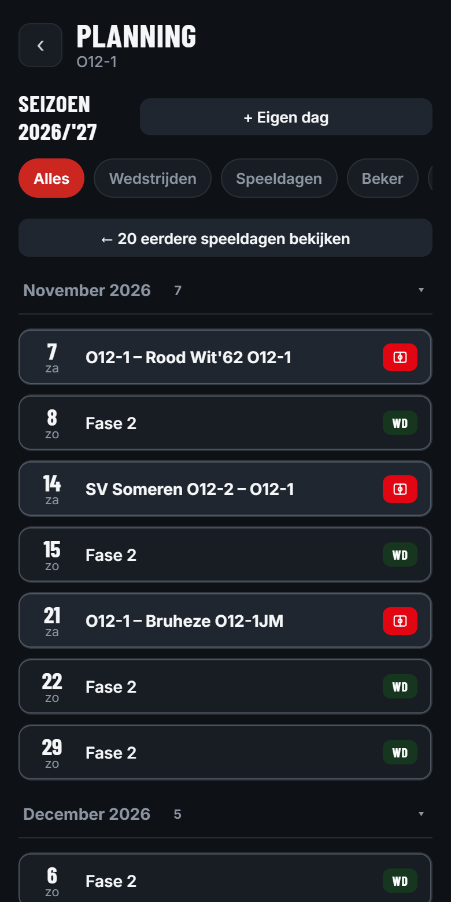
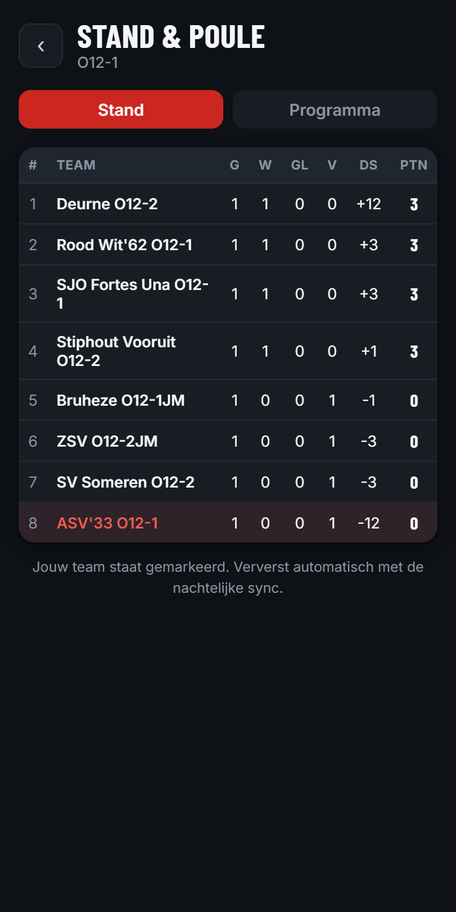

Opstellingen, evaluaties en de groei van je team, rond het jeugdbeleidsplan van ASV’33.
Voor trainers, coördinatoren en de technische commissie van ASV’33, op je telefoon én op de laptop.

Veel waardevolle informatie over een team verdwijnt tussen seizoenen, tussen trainers, of gewoon in iemands hoofd.
Speeltijd, opstellingen en observaties staan verspreid over WhatsApp, Excel en geheugen.
Zonder overzicht is eerlijke speeltijd lastig te bewaken, wedstrijd na wedstrijd.
Een nieuwe trainer begint weer bij nul: inzicht in een speler gaat niet mee over.
Cluppie is geen los technisch hulpmiddel. Het is de dagelijkse vertaling van hoe ASV’33 wil opleiden.
Vaste, korte momenten na elke wedstrijd: reflectie wordt een gewoonte, geen uitzondering.
Groeicurves over meerdere wedstrijden maken de voortgang van een team concreet en bespreekbaar.
Snel te gebruiken, geen zware administratie: energie blijft bij het team, niet bij het systeem.
Kennis over een speler blijft behouden, ook als de trainer wisselt van seizoen naar seizoen.
Elke functie is gebouwd om trainers tijd te besparen of inzicht te geven, nooit om extra werk toe te voegen.

Van de eerste keer inloggen tot het clubbrede evaluatieoverzicht: dit is de volledige gereedschapskist.
Het jeugdbeleidsplan bepaalt de inhoud. Cluppie zorgt dat die inhoud dagelijks wordt toegepast.
Het team speelt, de trainer observeert.
In dertig seconden de teambeoordeling invullen.
De ontwikkeling van het team wordt zichtbaar.
Cluppie stelt een passend thema voor.
Het team oefent precies wat het nodig heeft.
Trainer Mark van JO11-2 fluit het laatste fluitsignaal. Voor de kleedkamer opent hij Cluppie en tikt in dertig seconden de teamevaluatie in: balbezit, samenwerking, verdedigen.
TeambeoordelingIn de Stats-tab ziet Mark dat samenspel drie wedstrijden op rij stijgt, precies wat hij op training had geoefend. Druk zetten blijft wat achter. Cluppie stelt een bijpassend trainingsthema voor.
Groeicurve en suggestieOp training pakt Mark het thema op. Aan het eind van het seizoen laat hij, samen met de coördinator, een groeicurve zien die het hele seizoen bestrijkt, opgebouwd uit tientallen kleine observaties.
Training en seizoensbeeldLog in met je ASV’33-account via Google of e-mail.
Gebruik de uitnodigingslink of teamcode die je van een coach of clubbeheerder krijgt.
Vul na je eerstvolgende wedstrijd de teambeoordeling in. De rest ontdek je vanzelf.
Cluppie staat klaar voor jouw team.